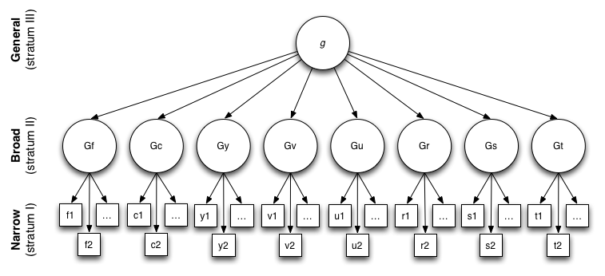
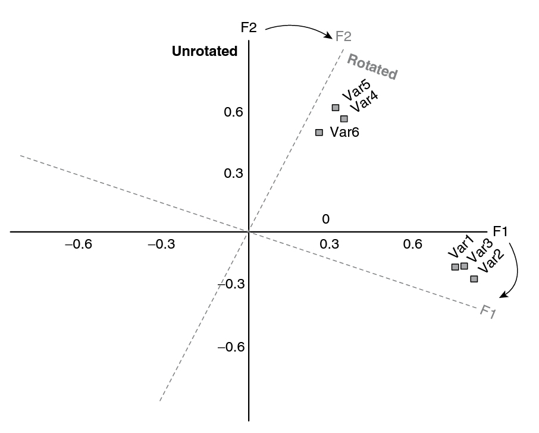
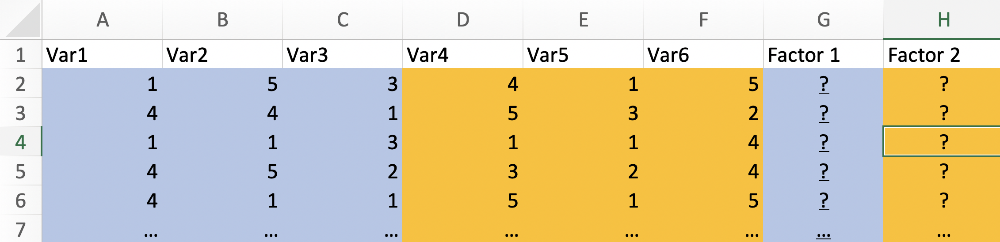

Multi-level linear regression, factor analysis
PSY-8003: Multivariate kvantitative forskningsmetoder
Matthias Mittner
Institute for Psychology
v2022
Outline
- Exploratory factor analysis
- What Are factors?
- Representing factors
- Extracting factors
- Interpreting factor structures
- Factor scores/Composite scores
What is factor analysis?
In psychology…
- we study complex and abstract concepts
- with somewhat fuzzy definitions
- that cannot be measured directly
Examples:
- “burnout”, “intelligence”, “love”, …
- “depression”, “extraversion”, “expertise”, …
Solution: measure many related variables and infer (latent) concept…
What is factor analysis?

Goals
- data/variable-reduction
- determine “dimensionality” of a dataset
- uncover latent factors underlying a set of variables
Example: Factor structure of cognitive abilities
Spearman’s \(g\)-factor
- historical data from Spearman (1904): six measures of school performance, all highly (positively) correlated
- students that were good in one field where usually also good in others
- “positive manifold phenomenon”: consistent finding of universally positive correlation matrices of mental test results
Example: Factor structure of cognitive abilities
- Charles Spearman (1863-1945)
- two-factor theory or intelligence
- a general (\(g\))-factor and several “specific” factors
- Raymond Cattell (1905-1998)
- \(g\)-factor divided into fluid (\(G_f\)) and cristallized (\(G_c\)) intelligence
- especially: lifespan-development
- John B. Carroll (1916–2003)
- three-stratum theory of intelligence: 3 “layers” from general \(g\) to specific
All these theories use Factor-analysis as their main tool!
Refined theories

- three-stratum theory (Caroll, 1993)
- \(g\) factor on most general level
- “broad” abilities: fluid intelligence (Gf), crystallized intelligence (Gc), general memory and learning (Gy), broad visual perception (Gv), broad auditory perception (Gu), broad retrieval ability (Gr), broad cognitive speediness (Gs), and processing speed (Gt)
Factor analysis goals
Determine “dimensionality” of a dataset
- is there a single \(g\) or are there multiple underlying factors?
Reduce dimensionality
- three-stratum theory based on 460 studies including hundreds of cognitive tests
Discover underlying factors
- determine and extract fluid intelligence, crystallized intelligence etc
- do these factors make a difference in practice?
- different life-trajectories?
- different neural correlates?
- different correlations to success in life?
- …
Example 2: Personality psychology
- hundreds of verbal descriptions of personality (adjectives) were scored and factor-analysed
- good evidence for five main factors
- “Big-Five” (NEO-FFI)
- related to health, education, career-choice etc
Exploratory (EFA) vs. confirmatory (CFA) factor analysis
EFA
- data-driven
- determine factors that are “in the data”
- minimal guidance through theory
CFA
- theory-driven
- is a specified “factor model” represented in the data?
- special case of structural-equation modeling (SEM)
Example
Questionnaire on environmental norms

- 1 = totally disagree to 5 = totally agree
Items in the questionnaire
Var1: Most of my friends think I should use environmentally friendly productsVar2: Most of my neighbours think I should use environmentally friendly productsVar3: Most of my colleagues think I should use environmentally friendly productsVar4: I feel a moral obligation to buy environmentally friendly productsVar5: I feel a moral obligation to recycle household wasteVar6: I feel a moral obligation to buy products made with recycled ingredients
Questionnaire on environmental norms
- 1 = totally disagree to 5 = totally agree
- masurements from every participant
- do some items belong together?
From data to correlation matrix
- calculate all pairwise correlations
- lower-diagonal matrix (upper half is symmetric, \(r(A,B)=r(B,A)\))
- diagonal is \(r(A,A)=1\)
- can we detect pattern in this correlation matrix?
Factors to explain correlation patterns
variables 1-3 are highly correlated
variables 4-6 are highly correlated
correlations between the two are low
use two factors to explain this
Factor 1 \(\approx\) Social Norms (friends, neighbours, colleagues)
Factor 2 \(\approx\) Personal Norms (“I feel a moral obligation”)
- these “factors” are based on inspection of the correlation matrix and item formulation!
Factors from Exploratory Factor Analysis (EFA)
- in EFA, all items are (possibly) connected to all factors a priori
- EFA “figures out” an internal structure
- we don’t give any theoretical guidance
FA as “regression”
Var1 \(=\beta_{1,1}\times\text{Social Norms} + \beta_{2,1}\times\text{Personal Norms} + \epsilon\)Var2 \(=\beta_{1,2}\times\text{Social Norms} + \beta_{2,2}\times\text{Personal Norms} + \epsilon\)Var3 \(=\beta_{1,3}\times\text{Social Norms} + \beta_{2,3}\times\text{Personal Norms} + \epsilon\)Var4 \(=\beta_{1,4}\times\text{Social Norms} + \beta_{2,4}\times\text{Personal Norms} + \epsilon\)Var5 \(=\beta_{1,5}\times\text{Social Norms} + \beta_{2,5}\times\text{Personal Norms} + \epsilon\)Var6 \(=\beta_{1,6}\times\text{Social Norms} + \beta_{2,6}\times\text{Personal Norms} + \epsilon\)
(Intercept was dropped, assuming that variables are standardized)
Little problem:
We do not know the value of the factors “Social Norms” and “Personal Norms” …
FA as “regression”
\[
Y_{ji}=\beta_{1j} X_{1i} + \beta_{2j} X_{2i} + \epsilon_{ji}
\]
- item \(j\) and person \(i\)
- for each variable \(j\) (
Var1, Var2, …):
- the regression coefficients \(\beta_{1j}\) and \(\beta_{2j}\) are called factor loadings
- the error term \(\epsilon_{ji}\) is called uniqueness
- the \(R^2\) for each of the models is called communality
- since the factor-scores are unknown a priori, other criteria must be added to make solution identifiable (possible to estimate)
Partitioning the variance in factor analysis
- FA decomposes variance in each item into
- “common” variance (shared with other items): communality
- “unique” variance for each variable: uniqueness
- the unique variance can be further divided into “specific” and “error” variances
- specific variance: e.g., biased wording affecting a specific item
- error variance: e.g., mood influences responding to a specific item
Partitioning the variance in factor analysis
Communalities \(h^2\)
- Definition: Percentage of variance in a variable explained by factors
- Intuition: how much does a variable have in common with the factors?
- Items with low \(h^2\) fall “outside” the factor solution
- Rule of thumb:
- \(<.1\) is extremly low, \(<.2\) is very low, \(<.4\) is low, \(<.5\) is somewhat low
- compare relative to other item’s \(h^2\)
FA process
(Fields, 2017)
FA process
- in practice, EFA process is often circular and iterative
- based on results from preliminary EFA, different choices can be made
- dropping items that have high uniqueness/low communality (“orphans”)
- choosing different methods (number of factors, rotation etc)
- goal: get a good fitting model that explains the data well
(Mehmetoglu & Mittner, 2021)
Factor analysis requirements
Can and should I run a factor analysis on my dataset?
- Factorability
- adequate sample size
- linearity
- metric (continuous variables)
Factorability
Is the dataset useful for FA?
- are there high correlations between the different variables?
- can we identify “groups” of correlated variables (clusters)?
- formal procedure: Kaiser-Meyer-Olkin (KMO) Test
Factorability
Kaiser-Meyer-Olkin (KMO) Test
\[
\text{KMO} = \frac{\displaystyle \underset{j\neq k}{\sum} r_{jk}^2}{\displaystyle \underset{j\neq k}{\sum} r_{jk}^2+\underset{j\neq k}{\sum} p_{jk}^2}
\]
- measure of how suited your data is for Factor Analysis
- KMO has values between 0 and 1
- rule of thumb:
- KMO values between 0.8 and 1: sampling is adequate
- KMO values <0.6 (sometimes 0.5): sampling is not adequate
- KMO Values close to zero: there are large partial correlations compared to the sum of correlations
Sample size
What is an adequate sample size?
- Formal Power-analysis difficult/impossible (what is the hypothesis test?)
- But: relatively large sample necessary for reproducibility of factor structure
- higher communalities \(\rightarrow\) smaller sample required
- more items per factor \(\rightarrow\) smaller sample required
- more factors \(\rightarrow\) larger sample required
- many rules of thumb out there, e.g.:
- 100 subjects=sufficient if clear structure; more is better (Kline, 1994)
- 100 subjects=poor; 300 =good; 1000+ = excellent (Comrey & Lee, 1992)
- 300 subjects, though fewer works if correlations are high among variables (Tabachnik & Fidell, 2001)
Determining the number of factors

Many “rules” for determining number of factors
- Kaiser’s criterion (Eigenvalue rule)
- Scree-plot
- Parallel Analysis
- Theoretical reasoning
Eigenvalues and Eigenvectors
- each factor is associated with an Eigenvalue and an Eigenvector
- the eigenvalue reflects the amount of variance explained
- Eigenvalues always decrease with factor number (first factor explains most)
- Eigenvalue on “item” scale:
- 20 items: an eigenvalue of 10 means that the factor contains as much information as 10 items
Eigenvalue rule
- select factors with eigenvalue > 1 (explains at least as much as one item)
- or: select factors with eigenvalue > average communality
Scree plot
- Scree: “an accumulation of loose stones or rocky debris lying on a slope or at the base of a hill or cliff”
- Scree-plot: Eigenvalue vs. component number
- we want the big cliff, not the scree at the bottom
Scree plot
combined with Kaiser’s criterion
- Kaiser’s criterion: retain 4 factors (or 5 if >average)
- Scree-criterion: retain 5 factors
- theory: 5 factors (NEO-FFI, five-factor inventory)
- FA on measures from the NEO-FFI on a sample of N=2436 participants
Parallel analysis
- simulation-based
- generate \(N\) random datasets with the same number of subjects and variables
- run FA and calculate eigenvalues
- compare real Eigenvalues to the random ones
- interesting method but sometimes too lenient
The hunt for “simple structure”
We really want:
- each variable should “load” highly on exactly one factor
- this is called “simple structure”
- makes interpretation of factors much easier
Rotation of factors

- redistributing the amount of variance explained by each factor
- does not change total variance explained (communality)
- mathematical fit is identical
NEO-FFI (Big-Five)
unrotated vs. rotated solution…
Rotation of factors
Orthogonal vs. oblique rotation
Orthogonal >
- factors are uncorrelated
- “varimax” (maximize explained variance)
Oblique
- correlation of factors allowed
- “promax(\(\kappa\))” method
Rotation of factors
Orthogonal vs. oblique rotation
- Orthogonal rotation
- uncorrelated components
- interpret rotated component loadings
- sum of rotated eigenvalues = sum of unrotated EVs
- Oblique rotation
- correlated factors (makes sense intuitively)
- interpret pattern matrix & component correlation matrix
- sum of rotated eigenvalues > sum of unrotated eigenvalues
Big-Five rotated solution
Factor correlation matrix
- interpret both
- rotated factor-loadings
- factor-correlation matrix
- if factors are uncorrelation, matrix should contain low off-diagonal values
Interpreting factor loadings
Example:
- loading of
Var6 on factor 1 is \(-0.17\)
- \((-0.17)^2=0.03\) means that factor 1 explains 3% of the variance in
Var6
- loading of
Var6 on factor 2 is \(0.88\)
- \((0.88)^2=0.77\) means that factor 2 explains 77% of the variance in
Var6
- together, the factors explain \(3\% + 77\%=80\%\) of the variance (\(=h^2\))
- uniqueness = \(1-h^2=20\%\) for
Var6
Interpreting factor loadings
- orthogonal rotation:
- factor loading corresponds directly to the standardized coefficient in a bivariate regression
- interpretation: “for every unit increase in factor 1,
Var6 will change by 0.88 units”
- oblique rotation:
- factor loading corresponds to the partial standardized coefficient in multiple regression
- interpretation: “for every unit increase in factor 1,
Var6 will change by 0.88 units controlled for factor 2”
Labeling/refining factors

Examine factor pattern matrix (loadings):
- what have items loading high on a factor in common?
- negative loadings \(\rightarrow\) flip sign?
- loadings \(<.4\) can typically be disregarded
- variables loading weakly on all factors can be removed (removal one-by-one with re-estimation of FA)
- variables loading on multiple variables: exclude (?)
- find labels for the factors based on items loading highly on it
Calculating factor scores
a.k.a. Composite scores
- often, factor-scores should be used in additional analyses/studies, e.g.
- which brain regions correlate with the \(g\)-factor?
- are people scoring high on Neuroticism more prone to mental illness?
- …
- calculate factor-scores
- using regression method (aka estimated factor scores)
- using sum-scores (aka generated factor scores)
Calculating factor scores
Regression method
- weighted sum using score on each item multiplied with loading
- equivalent to prediction method in linear regression
Calculating factor scores
Sum-score method

- in case of well-polarized loadings (“simple structure”)
- sum/mean of items “belonging” to each factor
Reliability of factor score
Sum-score method
Cronbach’s \(\alpha\):
\[
\alpha=\left(\frac{K}{K-1}\right)\left(\frac{S_{T}^{2}-\sum_{i=1}^{K}S_{i}^{2}}{S_{T}^{2}}\right)
\]
where \(K\) is the number of variables, \(S_{i}^{2}\) is the variance of each variable and \(S_{T}^{2}\) is the variance of the summated score.
measure of reliability (internal consistency)
between 0 and 1 (larger is better)
Kline (1999): Reliable if > .7
depends on the number of �items, more questions = bigger \(\alpha\)
remember to reverse score reverse phrased items:
- If not, \(\alpha\) is reduced and can even be negative
Confirmatory (CFA) factor analysis
- specify in advance which loadings should be present (and which should not)
- determine how well the model fits the data
- other constraints are possible
- very flexible technique that is based on SEM
NOTE
- CFA should never be run on the same dataset as the EFA to “confirm” it (double-dipping)
- when changing the CFA model based on the data, it is not confirmatory anymore
EFA and CFA
Are they really exploratory and confirmatory?
- EFA:
- is often not really exploratory
- selection of items theory-driven
- choice of analytic steps often driven by theory (drop non-conforming items etc)
- CFA:
- is often not really confirmatory
- changes to the model in the presence of bad model fit
- tweaks of CFA model happen often
Reliability and Validity of the measurement
- measurement should be reliable
- consistently provide similar estimates for similar situations
- measurement should be valid
- it should measure what we want it to measure
Assessing reflective measurement models
Construct reliability
- reliability=“the LV consistently gives the same measurement”
- for SEM evaluation: internal consistency
- to what degree do the different items measure the same underlying construct?
- related but not identical to unidimensionality
- other forms of reliability (ideally conducted during scale development):
- split-half reliability
- test-retest reliability
- inter-rater reliability
Assessing reflective measurement models
Construct reliability
Cronbach’s \(\alpha\):
\[
\alpha=\left(\frac{K}{K-1}\right)\left(\frac{S_{T}^{2}-\sum_{i=1}^{K}S_{i}^{2}}{S_{T}^{2}}\right)
\]
\(K\) is the number of variables, \(S_{i}^{2}\) is the variance of each variable and \(S_{T}^{2}\) is the variance of the sum of the items.
between 0 and 1 (larger is better)
\(\tau\)-equivalence assumed (\(\lambda_1 = \lambda_2 = ... = \lambda_n\))
depends on the number of items: more items = bigger \(\alpha\)
remember to reverse score reverse phrased items:
- If not, \(\alpha\) is reduced and can even be negative
Assessing reflective measurement models
Construct reliability
Dillon-Goldstein’s \(\rho\) (DG rho)
\[
\rho_{C} = \frac{ \left( \sum_{i=1}^k \lambda_i \right)^2 }{ \left( \sum_{i=1}^k \lambda_i \right)^2 + \sum_{i=1}^k \sigma^{2}_{e_i} }
\]
- uses factor-loadings from measurement model
- does not assume \(\tau\)-equivalence
- should be preferred over \(\alpha\) (but Cronbach’s \(\alpha\) widely used)
- Kline (1999): adequate reliability if \(\rho > .7\) but \(\rho<.93\) (caution!)
Construct validity LVs
- validity=“the LV measures what we think it measures”
- External validity: does it generalize to other situations/the real world?
- difficult to test in practice
- Internal validity: does it make sense within the study?
- easy to quantify
- Convergent validity: similar things correlate highly with the measure
- Divergent validity: dissimilar things do not correlate with the measure
Assessing convergent validity
- based on inter-item correlations (should be high!)
Criteria for convergent validity
- factor loadings \(\lambda\)
- reflects correlation bw item and factor
- \(\lambda^2\) = amount of item variance explained by factor
- rule of thumb: \(\lambda^2>0.5 \rightarrow\lambda > 0.7\)
- average variance extracted (AVE) = communality
- average of squared factor loadings
- AVE > 0.5
Example: Assessing convergent validity
Assessing discriminant validity
- based on inter-construct correlations (should be low!)
Criteria for discriminant validity
- communality (AVE) of the constructs > squared inter-construct correlations
- Fornell-Larcker criterion
Example: Assessing convergent validity

Content validity
content validity = “the extent to which a test measures a representative sample of the subject matter or behavior under investigation”
Inspecting items/variables:
- does each of the variables measure an aspect of the construct?
- is there an important aspect of the construct that is not covered?
- expert judgment/agreement